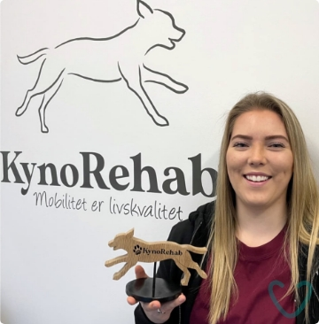

Om mig

Mit navn er Monique Nissen og er 24 år.
Jeg er nyuddannet fra KynoRehab, hvor jeg har opnået titlen som KynoOsteo terapeut og dermed uddannet indenfor Osteopati. Til daglig driver jeg en klinik i Lundby, hvor jeg er en del af franchisekæden KynoRehab.
Min vision er at gøre det muligt for alle at få sin hund behandlet. Jeg har set alt for mange gange at ejer får deres hund aflivet pga. af et problem som kunne have været løst med en osteopati behandling.
Med et genoptræning- og rehabiliteringsforløb, er det er muligt for din hund at få en god livskvalitet igen. Jeg tilbyder forskellige behandlingsformer, personligt tilrettelagt din hund.
Hvorfor vælge mig?
- Er rolig, ydmyg og tillidsfuld
- God til følsomme hunde
- God situationsfornemmelse
- Har fokus på at der oftest er et alternativt til aflivning
Når du ankommer til min klinik vil du blive mødt med åbne arme og ydmyghed. Jeg bestræber mig på at du skal føle dig godt tilpas og føle sig tryg når du overlader din hund i mine hænder.
Som examineret KynoOsteo terapeut, har jeg følgende titler:
KynoMyo Terapeut (Massage, afspænding af muskulære problemer, arvævsteknikker mm.)
KynoKranio Terapeut (Kranio Sakral terapi, Afspænding af hjernehinder)
KynoFascia Terapeut (Afbalancering af bindevæv, Bindevævsteknikker)
KynoVicera Terapeut (Afspænding af organer)
KynoOsteo Terapeut